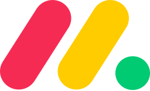

Better questions.
Meaningful solutions.
If you’d rather read than play: the three jobs on the island stand for my real work. Make it visible, understand, build.
Data pipelines and dashboards
The work was getting done, but no one could see how well; decisions were made on gut feeling.
I decided with the business unit what to measure. In projects across different sectors I built data pipelines with SQL and dbt and Power BI dashboards. For an RPA service I set up the structure that collects robot data in Supabase and designed the visuals in Figma.
→ In every project, performance became trackable from a single dashboard; the RPA dashboard is used by ~50 people.
Process analysis and automation
In complex flows it wasn’t clear what slowed the work down or what was worth automating.
With stakeholders from three countries I documented processes in SDDs and redesigned the flows in Figma. I gathered and prioritised requirements through stakeholder interviews and validated them with UAT. In total I analysed 40+ processes; for the ones fit for automation I wrote the PDDs.
→ The flows are standardised; 20+ robots in production, ~70% time saved against manual times.
Portals and websites
A solution was useless until it reached the people who would use it; and the data the robots needed was in the hands of the business unit.
I designed portals where the business unit enters the data, the robot runs on it in the background, and the results come back. I took 5+ portals and sites from idea to production end to end, including API and AI integrations, servers and domains.
→ The business unit works with the robot from a single screen: they enter the data and see the result in the same place.
Character history
RPA performance dashboard, process analysis and automation, end-to-end portal and web solutions.
CURRENT JOBRequirements analysis, reporting automation and Power BI dashboards for healthcare, e-commerce and call-centre projects.
SDD-based process design with Google’s Strategy & Operations team and stakeholders in the US, India and Greece.
Inventory

Monday